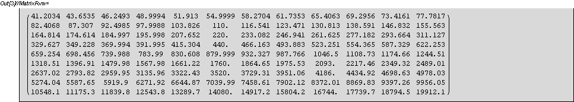
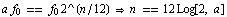
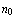
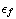
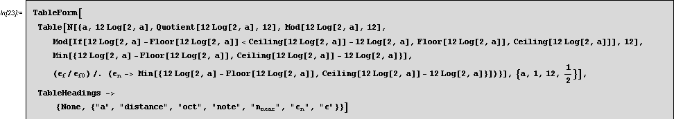

| HOME | PERSONAL | PROJECTS | LINKS |
La lista di sostituzioni "note", converte i numeri da 0 a 12 nelle note La Do ...
La funzione f[n] restituisce la frequenza della nota n.
Segue una tabella delle frequenze.
Le colonne riportano le note (crescenti verso il basso) e le righe la
stessa nota ad ottave differenti (crescenti verso destra.)

Le note sono collocate (nelle frequenze) secondo una scala logaritmica.
La sensazione di "bello" è determinata dal criterio con cui
si accostano note differenti.
Questo è vero sia per il timbro di uno strumento, che per le
note di un accordo.
Cerchiamo ora di determinare questi criteri.
Iniziamo col cercare le note che corrispondono a multipli interi (e
semiinteri), di una nota fissata.
Si tratta dell'equazione :

La tabella che segue mostra nella riga"a" e seconda colonna, a quante
note di distanza si può trovare il multiplo "a" della nota di
riferimento.
La quarta colonna contiene lo stesso numero modulo 12, e la terza lo
stesso numero diviso per 12: in questo modo si identifica ottava e nota.
Nella quinta si trova la nota più vicina, nella sesta la distanza da questa (in termini di posizioni n).
La sesta colonna contiene l'errore che si commette a considerare la nota (near) pari a (a *

). All'errore  è preferibile sostituire il corrispondente
scostamento in frequenza
è preferibile sostituire il corrispondente
scostamento in frequenza

. Osservando che lo scostamento  calcolato per l'intero 1 (intervallo che
intercorre tra una nota e l'altra) è pari a
calcolato per l'intero 1 (intervallo che
intercorre tra una nota e l'altra) è pari a 
allora sarà utile considerare al posto di  il valore
il valore  /.
/.
Chiamiamo con questo valore e lo introduciamo nella settima colonna.

| a | distance | oct | note | ε | ||
| 1.` | 0 | 0 | 0 | 0 | 0 | 0 |
| 1.5` | 7.01955000865387379` | 0 | 7.01955000865387379` | 7.` | 0.019550008653873796` | 0.0190015443982531238` |
| 2.` | 11.9999999999999996` | 1.` | 0 | 0 | 0 | 0 |
| 2.5` | 15.8631371386483461` | 1.` | 3.86313713864834618` | 4.` | 0.136862861351653819` | 0.133475057115958173` |
| 3.` | 19.0195500086538729` | 1.` | 7.0195500086538729` | 7.` | 0.0195500086538729078` | 0.0190015443982531238` |
| 3.5` | 21.6882590646912465` | 1.` | 9.68825906469124831` | 10.` | 0.311740935308751687` | 0.305567071218499863` |
| 4.` | 23.9999999999999991` | 2.` | 0 | 0 | 0 | 0 |
| 4.5` | 26.0391000173077458` | 2.` | 2.03910001730774581` | 2.` | 0.0391000173077458157` | 0.0380245584634331947` |
| 5.` | 27.8631371386483461` | 2.` | 3.8631371386483444` | 4.` | 0.136862861351655595` | 0.133475057115961925` |
| 5.5` | 29.5131794236475641` | 2.` | 5.51317942364756419` | 6.` | 0.486820576352435807` | 0.47960764168846186` |
| 6.` | 31.0195500086538711` | 2.` | 7.01955000865386935` | 7.` | 0.0195500086538693551` | 0.0190015443982493899` |
| 6.5` | 32.4052766176930973` | 2.` | 8.4052766176930973` | 8.` | 0.405276617693097307` | 0.398328632150665171` |
| 7.` | 33.6882590646912438` | 2.` | 9.68825906469124475` | 10.` | 0.31174093530875524` | 0.305567071218503638` |
| 7.5` | 34.8826871473022137` | 2.` | 10.8826871473022146` | 11.0000000000000008` | 0.11731285269778624` | 0.114344316146585289` |
| 8.` | 36.0000000000000008` | 3.` | 0 | 0 | 0 | 0 |
| 8.5` | 37.0495540950040691` | 3.` | 1.04955409500406915` | 1.` | 0.0495540950040691541` | 0.0482056518448074555` |
| 9.` | 38.0391000173077475` | 3.` | 2.03910001730774581` | 2.` | 0.0391000173077458157` | 0.0380245584634331947` |
| 9.5` | 38.9751301613230225` | 3.` | 2.97513016132302254` | 3.` | 0.0248698386769774515` | 0.024175844599023244` |
| 10.` | 39.8631371386483479` | 3.` | 3.86313713864834795` | 4.` | 0.136862861351652043` | 0.133475057115958173` |
| 10.5000000000000004` | 40.7078090733451158` | 3.` | 4.70780907334511766` | 5.` | 0.292190926654882332` | 0.286242104549119211` |
| 11.0000000000000008` | 41.5131794236475659` | 3.` | 5.51317942364756419` | 6.` | 0.486820576352435807` | 0.47960764168846186` |
| 11.4999999999999991` | 42.2827434726841477` | 3.` | 6.28274347268414601` | 6.` | 0.282743472684146013` | 0.276911219186958401` |
| 11.9999999999999996` | 43.0195500086538729` | 3.` | 7.0195500086538729` | 7.` | 0.0195500086538729078` | 0.0190015443982531238` |
| HOME | PERSONAL | PROJECTS | LINKS |